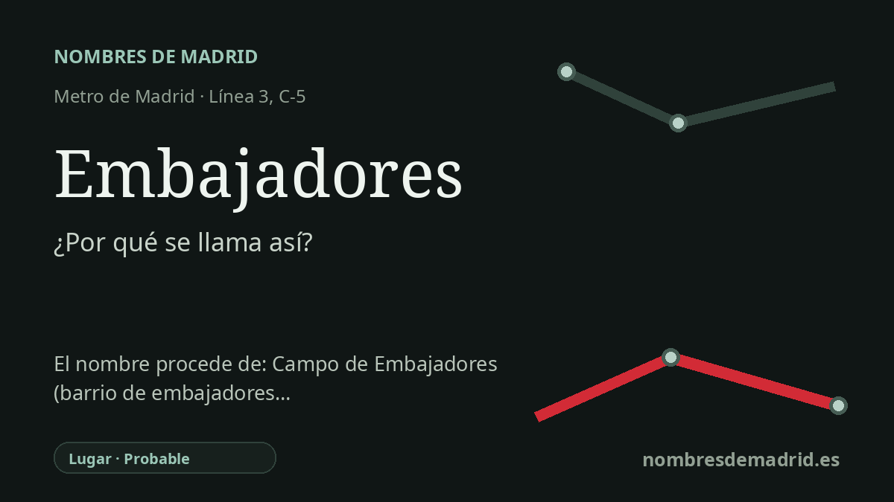

Publicado el · Investigación de Nombres de Madrid · Cómo verificamos cada origen · 7 fuentes consultadas
Respuesta rápida
Embajadores toma su nombre de la glorieta y la calle de Embajadores. El topónimo antiguo se explica tradicionalmente por unos embajadores extranjeros que se retiraron a casas de campo extramuros durante una epidemia en tiempos de Juan II de Castilla.
La historia del nombre
La estación de Embajadores toma el nombre del lugar donde se encuentra: la Glorieta de Embajadores, vinculada a la calle de Embajadores y al antiguo Portillo de Embajadores de la cerca de Felipe IV. La ficha histórica de Metro de Madrid sitúa la estación en la glorieta, entre la calle de Embajadores y la de Miguel Servet, y recuerda que allí la calle salvaba el antiguo cerramiento de la ciudad.
Detrás del intercambiador moderno hay un topónimo madrileño más antiguo: el Campo de Embajadores. Según la explicación tradicional repetida por los cronistas del callejero, una epidemia durante el reinado de Juan II de Castilla llevó a varios embajadores extranjeros a alejarse del casco más poblado y alojarse en casas de campo extramuros. Los relatos posteriores mencionan enviados relacionados con Túnez, Aragón, Navarra y Francia.
La versión más detallada cuenta que el embajador de Túnez se instaló en la quinta de San Pedro, el de Aragón en Santiago el Verde, y los de Navarra y Francia en casas próximas. El terreno abierto entre esos alojamientos habría quedado en la memoria popular como campo de los Embajadores, y el camino que pasaba por allí o conducía a él conservó el nombre de Embajadores.
En el siglo XVII el nombre ya formaba parte de la geografía urbana madrileña. El plano de Texeira de 1656 es uno de los testimonios cartográficos fundamentales de esta zona de la ciudad, y las fuentes posteriores hablan del Portillo de Embajadores, la calle de Embajadores y, tras el crecimiento fuera de la cerca, del paseo y de la glorieta moderna.
La lectura más prudente es, por tanto, estratificada: la estación se llama directamente por el lugar urbano actual, y ese lugar conserva una tradición diplomática mucho más antigua. El episodio resulta verosímil y está bien asentado en la literatura toponímica madrileña, pero no tiene la fuerza de un documento municipal contemporáneo del siglo XV consultado, por lo que conviene presentarlo como origen tradicional y no como certeza absoluta.